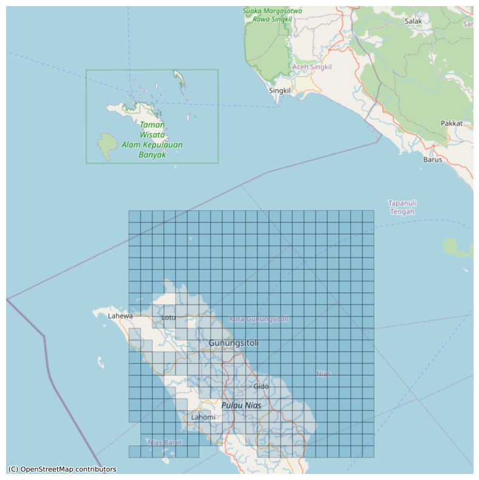

Embeddings in the context of Earth Observation (EO) and machine learning are dense, low-dimensional representations of high-dimensional data. In simple terms, they are numerical vectors that capture the essence of complex data, such as satellite imagery or temporal sequences from Earth observation instruments. These vectors are generated by models like Clay through a process of learning, where the model identifies and encodes the most important features and patterns within the data.
Importance in EO
Data Compression: Embeddings condense the rich information present in satellite images into a more manageable form, facilitating easier storage and faster processing.
Pattern Recognition: They enable the model to recognize and compare patterns across large datasets, which is crucial for tasks like change detection, anomaly identification, or land cover classification.
Semantic Interpretation: Embeddings help in understanding the semantic content of EO data, such as differentiating between urban and forested areas, or recognizing the stages of crop growth.
How to Use Embeddings for EO
Feature Extraction: Use Clay to process EO data and extract embeddings. These embeddings represent the key features of the data, capturing aspects like spectral signatures, texture, and temporal changes.
Similarity Searches: Employ embeddings to perform similarity searches across EO datasets. For example, by comparing embeddings, you can find areas with similar land use patterns or detect regions showing similar changes over time.
Machine Learning Integration: Embeddings can be used as input features for various machine learning models. In tasks like classification or regression, these embeddings provide a rich, pre-processed input that can significantly improve model performance.
Time-Series Analysis: For temporal EO data, embeddings can capture the dynamics of changes over time, aiding in monitoring environmental changes, urban development, or agricultural practices.
Anomaly Detection: Compare embeddings from different time periods or regions to identify anomalies or unexpected changes in the environment, such as sudden forest loss or unusual agricultural activity.
In practice, to use embeddings in EO, you would typically process your EO dataset through the Clay model to generate embeddings, and then utilize these embeddings as per your specific application needs, be it for further analysis, integration into other models, or for direct comparisons and searches.
Generating Embeddings
Once you have a pretrained model, it is now possible to pass some input images into the encoder part of the Vision Transformer, and produce vector embeddings which contain a semantic representation of the image.
Producing embeddings from the pretrained model
Step by step instructions to create embeddings for a single MGRS tile location (e.g. 27WXN).
Ensure that you can access the 13-band GeoTIFF data files.
aws s3 ls s3://clay-tiles-02/02/27WXN/
This should report a list of filepaths if you have the correct permissions, otherwise, please set up authentication before continuing.
Download the pretrained model weights, and put them in the checkpoints/ folder.
For running model inference on a large scale (hundreds or thousands of MGRS
tiles), it is recommended to have a cloud VM instance with:
1. A high bandwidth network (>25Gbps) to speed up data transfer from the S3
bucket to the compute device.
2. An NVIDIA Ampere generation GPU (e.g. A10G) or newer, which would allow
for efficient bfloat16 dtype calculations.
For example, an AWS g5.4xlarge instance would be a cost effective option.
This should output a GeoParquet file containing the embeddings for MGRS tile 27WXN (recall that each 10000x10000 pixel MGRS tile contains hundreds of smaller 512x512 chips), saved to the data/embeddings/ folder. See the next sub-section for details about the embeddings file.
For those interested in how the embeddings were computed, the predict step
above does the following:
1. Pass the 13-band GeoTIFF input into the Vision Transformer's encoder, to
produce raw embeddings of shape (B, 1538, 768), where B is the batch_size,
1538 is the patch dimension and 768 is the embedding length. The patch
dimension itself is a concatenation of 1536 (6 band groups x 16x16
spatial patches of size 32x32 pixels each in a 512x512 image) + 2 (latlon
embedding and time embedding) = 1538.
2. The mean or average is taken across the 1536 patch dimension, yielding an
output embedding of shape (B, 768).
More details of how this is implemented can be found by inspecting the
`predict_step` method in the `model_clay.py` file.
Format of the embeddings file
The vector embeddings are stored in a single column within a GeoParquet file (*.gpq), with other columns containing spatiotemporal metadata. This file format is built on top of the popular Apache Parquet columnar storage format designed for fast analytics, and it is highly interoperable across different tools like QGIS, GeoPandas (Python), sfarrow (R), and more.
Filename convention
The embeddings file utilizes the following naming convention:
The minimum acquisition date of the Sentinel-2 images used to generate the embeddings, given in YYYYMMDD format
MINDATE
The maximum acquisition date of the Sentinel-2 images used to generate the embeddings, given in YYYYMMDD format
VERSION
Version of the generated embeddings, given as a 3-digit number
Table schema
Each row within the GeoParquet table is generated from a 512x512 pixel image, and contains a record of the embeddings, spatiotemporal metadata, and a link to the GeoTIFF file used as the source image for the embedding. The table looks something like this:
source_url
date
embeddings
geometry
s3://…/…/claytile_*.tif
2021-01-01
[0.1, 0.4, … x768]
POLYGON(…)
s3://…/…/claytile_*.tif
2021-06-30
[0.2, 0.5, … x768]
POLYGON(…)
s3://…/…/claytile_*.tif
2021-12-31
[0.3, 0.6, … x768]
POLYGON(…)
Details of each column are as follows:
source_url (string) - The full URL to the 13-band GeoTIFF image the embeddings were derived from.
date (date32) - Acquisition date of the Sentinel-2 image used to generate the embeddings, in YYYY-MM-DD format.
embeddings (FixedShapeTensorArray) - The vector embeddings given as a 1-D tensor or list with a length of 768.
geometry (binary) - The spatial bounding box of where the 13-band image, provided in a WKB Polygon representation.
Additional technical details of the GeoParquet file:
- GeoParquet specification [v1.0.0](https://geoparquet.org/releases/v1.0.0)
- Coordinate reference system of geometries are in `OGC:CRS84`.
Embeddings Factory
If you don’t have embeddings, you’ll need to use the “Embeddings Factory”. It uses a given location and time, and a Clay model, to generate the embeddgins for each input data bundle.
EmbeddingsFactory
EmbeddingsFactory (model, output_directory)
Initializes the Embeddings Factory with a model and an output directory.
Working with embeddings
A Clay embedding filename will look like this 33PWP_20181021_20200114_v001.gpq which is a concatenation of the following:
33PWP - the location of the input data it comes from, in MGRS format.
20181021 - the earliest date for any band of the input data it comes from
20200114 - the latest date for any band of the input data it comes from
v001 - the embedding version number.
.gpq - the file extension, geoparquet.
Inside each file there will be as many rows as chips the MGRS tile was split into. as and each row will have a column for each of the embedding dimensions. The number of dimensions will depend on the Clay model used to generate the embeddings.
If the total areas is too big, you can visualize the embeddings areas on detail zoomin in around one:
# Get the coordinates of one geometryfirst_geometry = embeddings.gdf.loc[50].geometry# Create a 1km buffer around the first geometrybuffer= first_geometry.buffer(100*1000) # 100 x 1kmbounds =buffer.bounds# Call the plot method with the boundsembeddings.plot_locations(bounds=bounds)

Note that we are using a transparency alpha=0.2. Darker areas are where there are several embeddings stacked on top of each other, from different times.
We can plot the times.
# plot the histogram of the time rangeembeddings.gdf.start_date.hist(bins=10)
<Axes: >
To retrieve the RGB image for a given embedding, you can use the rgb_imgs method. the first time it will use the S3 url location to pull only the RGB bands, then save it locally for faster later retrieval.
You must specify the rows you want to retrieve, and if the first time, the output folder where to save the images, if it can’t reuse an existing local folder.